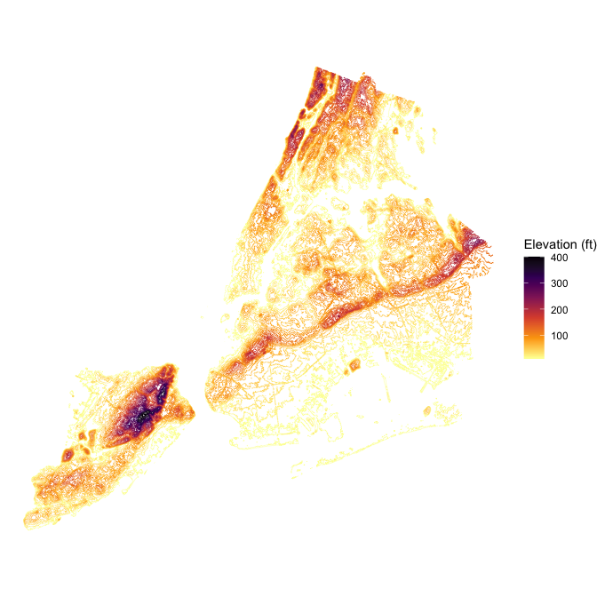

Bare-earth digital elevation model for New York City, derived from the City’s 1-foot 2010 LiDAR data. The package ships mean-aggregated 50-foot and 100-foot GeoTIFFs masked to the borough boundaries, plus a small contour sf object for ggplot2 overlays.
What’s included
The 100-foot and 50-foot rasters are accessed through functions that return a terra::SpatRaster:
nyc_terrain_100ft()
#> class : SpatRaster
#> size : 1561, 1581, 1 (nrow, ncol, nlyr)
#> resolution : 100, 100 (x, y)
#> extent : 910719.3, 1068819, 119060.7, 275160.7 (xmin, xmax, ymin, ymax)
#> coord. ref. : NAD83 / New York Long Island (ftUS) (EPSG:2263)
#> source : nyc_terrain_100ft.tif
#> name : elev
#> min value : 0.0000
#> max value : 406.0309Use nyc_terrain_path() to get the GeoTIFF path directly, e.g. for use with stars, GDAL, or rayshader:
nyc_terrain_path("50ft")
#> [1] "/Users/kjhealy/Library/R/library/nycterrain/extdata/nyc_terrain_50ft.tif"The contour-line dataset is lazy-loaded:
nyc_terrain_contours_sf
#> Simple feature collection with 40 features and 1 field
#> Geometry type: GEOMETRY
#> Dimension: XY
#> Bounding box: xmin: 913226 ymin: 120685.4 xmax: 1067369 ymax: 272810.7
#> Projected CRS: NAD83 / New York Long Island (ftUS)
#> # A tibble: 40 × 2
#> elev_ft geometry
#> <dbl> <MULTILINESTRING [US_survey_foot]>
#> 1 10 ((924658.6 123899.9, 924569.3 123844.9, 924492.1 123810.7, 924469.3 …
#> 2 20 ((913369.3 123441.1, 913352.8 123510.7, 913350.3 123610.7, 913351.6 …
#> 3 30 ((913369.3 123841.7, 913359.5 123910.7, 913369.3 124002, 913370.3 12…
#> 4 40 ((913469.3 123404.8, 913467.8 123410.7, 913436.1 123510.7, 913428 12…
#> 5 50 ((913469.3 123552.2, 913462.7 123610.7, 913461.5 123710.7, 913442.2 …
#> 6 60 ((913569.3 123454.3, 913548.8 123510.7, 913536.6 123610.7, 913522.1 …
#> 7 70 ((913669.3 123685.6, 913645.9 123710.7, 913669.3 123755.1, 913702.4 …
#> 8 80 ((916869.3 124296.1, 916859.7 124310.7, 916869.3 124377.5, 916969.3 …
#> 9 90 ((917569.3 126535.7, 917543.8 126610.7, 917569.3 126637, 917669.3 12…
#> 10 100 ((918369.3 132378.1, 918308 132410.7, 918369.3 132469.8, 918469.3 13…
#> # ℹ 30 more rowsExamples
A simple terrain map
ggplot(nyc_terrain_contours_sf) +
geom_sf(aes(color = elev_ft), linewidth = 0.15) +
scale_color_viridis_c(option = "inferno", direction = -1) +
labs(color = "Elevation (ft)") +
theme_void()
Functions and data
-
nyc_terrain_100ft()– 100ft mean-aggregatedSpatRaster -
nyc_terrain_50ft()– 50ft mean-aggregatedSpatRaster -
nyc_terrain_path()– path to a bundled GeoTIFF -
nyc_terrain_contours_sf– contour lines for ggplot2 overlays
Source
City of New York, 1-foot Digital Elevation Model (DEM): https://data.cityofnewyork.us/City-Government/1-foot-Digital-Elevation-Model-DEM-/dpc8-z3jc. Bare-earth, hydro-flattened raster derived from 2010 LiDAR. Vertical datum NAVD88, units in feet. CRS EPSG:2263 (NAD83 / New York Long Island, ftUS).